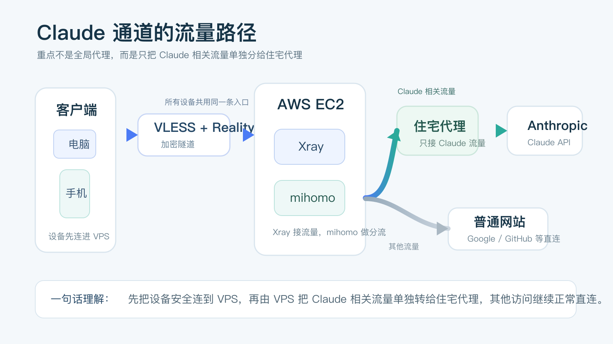
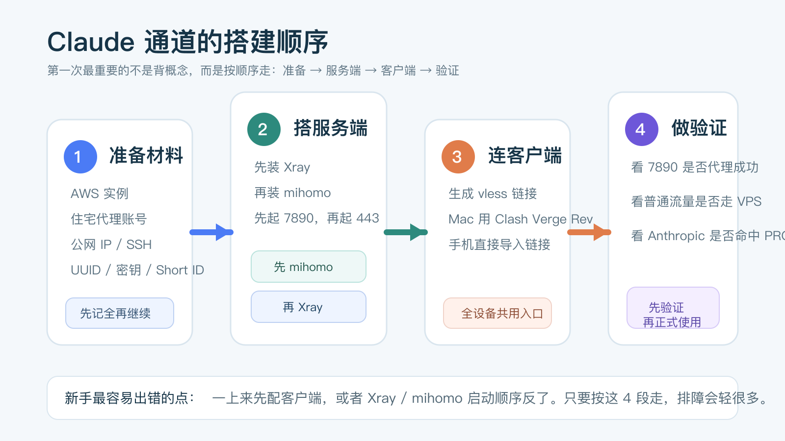

第一次搭 Claude 通道，最容易卡住的不是命令，而是这几步没人讲透

导读
这不是一篇只给配置片段的帖子，而是一篇按普通用户第一次搭建视角整理的 Claude 通道教程。
我会把整条路顺成 5 段：先看方案在做什么，再准备材料，接着搭服务端、连客户端、做验证，最后给你一份最常见问题排查表。
很多人现在折腾 Claude 通道，已经不是为了“偶尔试一下”，而是想把 Claude / Claude Code 稳定接进自己的日常工作。
但第一次动手时，真正劝退人的通常不是某一行命令，而是另一件更现实的事：你不知道该先准备什么，不知道整条链路该按什么顺序走，也不知道做到哪一步才算真的成功。
第一次搭 Claude 通道，真正难的往往不是命令本身，而是没人把“先做什么、做到哪一步算成功、卡住先查哪里”讲顺。
如果你只是低频偶尔用 Claude，这套复杂度未必值得；但如果你已经开始高频依赖它，这篇会帮你把第一次搭建走顺。
先用一句人话讲清，这套方案到底在做什么

你的设备先安全连到一台 AWS 云服务器，再由服务器把 Claude 相关流量单独分给住宅代理，其他流量继续正常直连。
这里面 3 个名字第一次看会有点晕，我先翻译成人话：
Xray：负责接住你设备传来的加密流量，像这条通道的大门。mihomo：负责按规则分流，决定哪些流量要继续转给住宅代理。住宅代理：给Anthropic / Claude相关请求一个更稳定的出口 IP。
这套方案和“开一个全局代理就完事”最大的区别是：它不是把所有流量都塞进同一个黑盒，而是只给 Claude 单独开一条更可控的路。
动手前，先准备这 4 样东西
第一次最容易翻车的地方，不是命令，而是材料没准备齐。
1. 一台 AWS EC2
- 区域：
us-west-1或ap-northeast-1 - 系统：
Ubuntu Server 24.04 LTS - 实例：
t3.micro - 磁盘：
8-20 GB
你后面要从 AWS 记住 3 个东西：实例公网 IP、SSH 登录方式，以及安全组是否只放行了 22 和 443。
2. 一个住宅代理账号
你至少要提前拿到这 4 项：代理地址、代理端口、用户名、密码。没有这组信息，你后面就算把 Xray 和 mihomo 都装好了，也没法让 Anthropic 流量真正出得去。
3. 一台电脑和至少一台移动设备
这篇默认按下面的客户端来写：
- Mac：
Clash Verge Rev - iPhone：
Hiddify - Android：
Hiddify或v2rayNG
4. 基本的 SSH 登录能力
你不用懂 Linux 运维，但至少要能完成两件事：用 SSH 登录 AWS，以及知道怎么复制、粘贴和保存配置文件。如果你连 SSH 都还没登录过，建议先把这一步单独跑通，再继续往下做。
提前提醒：7890 不需要开放到公网，它只给服务器本机上的 Xray -> mihomo 转发使用。
第一步：先把 AWS 实例和安全组准备好
| 配置项 | 推荐值 |
|---|---|
| 区域 | us-west-1 或 ap-northeast-1 |
| 镜像 | Ubuntu Server 24.04 LTS |
| 机型 | t3.micro |
| 存储 | 8-20 GB gp3 |
安全组只保留两条最关键的规则：
| 类型 | 协议 | 端口 | 来源 | 用途 |
|---|---|---|---|---|
| SSH | TCP | 22 | My IP | 远程登录 |
| Custom TCP | TCP | 443 | 0.0.0.0/0 | Xray 入站 |
实例创建好之后，再给它绑定一个弹性 IP。后面文章里的 <你的公网IP>，都指这个地址。
然后用 SSH 登录：
ssh -i your-key.pem ubuntu@<你的公网IP>
sudo apt update && sudo apt upgrade -y如果这一步能正常进服务器，说明你后面的服务端搭建就可以开始了。
第二步：先装 Xray，让设备先有一条安全入口
Xray 的任务很简单：让你的电脑或手机，先能通过 443 端口安全连进这台 VPS。
1. 安装 Xray
bash <(curl -L https://github.com/XTLS/Xray-install/raw/main/install-release.sh)
sudo setcap cap_net_bind_service=+ep /usr/local/bin/xray第二行是在给它低端口权限。没有这一步，后面 443 很可能起不来。
2. 生成这 3 组关键信息
# 生成 UUID
xray uuid
# 生成 Reality 密钥对
xray x25519
# 生成 Short ID
openssl rand -hex 8把下面这些值单独记下来，后面还会反复用：UUID、Private Key、Public Key、Short ID。
3. 写入 Xray 配置
打开配置文件：
sudo nano /usr/local/etc/xray/config.json然后把主稿里的 JSON 配置粘进去，再把占位符替换成你自己的值。你只需要先看懂两件事：
443是设备连进来的入口。Anthropic / Claude相关域名会被转给127.0.0.1:7890，也就是稍后要安装的mihomo。
第三步：再装 mihomo，让 Claude 相关流量单独走住宅代理
如果说 Xray 是入口，那么 mihomo 就是分流器。
1. 安装 mihomo
cd /tmp
wget -O mihomo-linux-amd64.gz https://github.com/MetaCubeX/mihomo/releases/download/v1.19.24/mihomo-linux-amd64-v1-v1.19.24.gz
gunzip -f mihomo-linux-amd64.gz
chmod +x mihomo-linux-amd64
sudo mv mihomo-linux-amd64 /usr/local/bin/mihomo
sudo mkdir -p /etc/mihomo /var/log/mihomo
sudo wget -O /etc/mihomo/Country.mmdb https://github.com/MetaCubeX/meta-rules-dat/releases/download/latest/country.mmdb
mihomo -v如果最后一行能正常输出版本号，说明它已经装上了。
2. 写入 mihomo 配置
sudo nano /etc/mihomo/config.yaml粘贴主稿里的 YAML 配置，再把住宅代理地址、端口、用户名和密码替换掉。这里最重要的其实只有两件事：
7890只监听本地，不暴露公网。- 只有
Anthropic / Claude相关流量走PROXY，其他流量走DIRECT。
3. 给 mihomo 建 systemd 服务
sudo tee /etc/systemd/system/mihomo.service << 'EOF'
[Unit]
Description=mihomo Proxy
After=network.target
[Service]
Type=simple
ExecStart=/usr/local/bin/mihomo -d /etc/mihomo
Restart=on-failure
RestartSec=5
[Install]
WantedBy=multi-user.target
EOF
sudo systemctl daemon-reload
sudo systemctl enable mihomo第四步：按顺序启动服务，不要反过来

必须先启动 mihomo，再启动 Xray。
因为 Xray 的出站流量要转给 7890，如果 mihomo 还没起来，Xray 就会找不到出口。
sudo systemctl start mihomo
sleep 2
sudo ss -tlnp | grep 7890
sudo systemctl restart xray
sudo ss -tlnp | grep 443你要看到的成功信号是：
7890监听在127.0.0.1443监听在0.0.0.0
第五步：生成客户端入口，再把各端设备接上
1. 先拿到通用的 vless:// 链接
vless://<UUID>@<你的公网IP>:443?encryption=none&flow=xtls-rprx-vision&security=reality&sni=www.apple.com&fp=chrome&pbk=<Public Key>&sid=<Short ID>&type=tcp#AWS-Xray如果你没记 Public Key，可以用下面这条命令重新算一次：
xray x25519 -i "<你的Private Key>"这条 vless:// 链接很重要，后面手机和平板基本都可以直接导入它。
2. Mac：Clash Verge Rev
下载地址：
https://github.com/clash-verge-rev/clash-verge-rev/releases
如果你想先测通，最短路径是新建一个本地 Profile，把主稿里的最小 YAML 配置写进去，然后打开：
Profiles里选中这个配置System Proxy
如果你要让本机终端里的 Claude Code 也走这条路，再加上：
export http_proxy="http://127.0.0.1:7890"
export https_proxy="http://127.0.0.1:7890"3. iPhone：Hiddify
- App Store 安装
Hiddify - 点
+ - 粘贴刚才那条
vless://链接 - 保存并连接
4. Android：Hiddify 或 v2rayNG
- 安装客户端
- 选择从剪贴板导入
- 粘贴
vless://链接 - 保存并连接
第六步：别急着上 Claude，先做这 3 个验证
第一次搭这类链路，最容易浪费时间的事，就是“看起来差不多好了”，然后直接去用，结果一旦出问题又不知道是哪里错了。正确做法是：先把验证跑完。
验证 1：确认 mihomo 本身能走住宅代理
curl -x socks5h://127.0.0.1:7890 https://ifconfig.me正常结果：返回的应该是住宅代理 IP，不是 AWS 那台 VPS 的公网 IP。如果这里就不对，先别看客户端，说明问题还在 mihomo 或住宅代理本身。
验证 2：确认设备连上 Xray 后，普通流量走 VPS
当你用电脑或手机连上这条通道后，去访问 ip.sb 或 ipinfo.io。正常结果是普通流量看到的是 VPS 公网 IP，这说明客户端到 Xray 这一段已经正常了。
验证 3：确认 Anthropic 流量真的被分给了住宅代理
sudo journalctl -u mihomo -f --no-pager再从客户端或本机代理环境里访问：
curl https://api.anthropic.com正常结果：
mihomo日志里能看到anthropic.com命中PROXY- 返回可以是
200、404，但不要是403或451
第七步：第一次最容易卡住的 5 个地方
| 问题 | 最优先检查点 | 对应动作 |
|---|---|---|
443 没监听 | Xray 没起起来，或没给低端口权限 | sudo setcap cap_net_bind_service=+ep /usr/local/bin/xray && sudo systemctl restart xray |
7890 没监听 | mihomo 配置有误或服务没启动 | sudo systemctl status mihomo |
| Google 能开，Anthropic 不通 | 住宅代理没有生效 | 先测 curl -x socks5h://127.0.0.1:7890 https://ifconfig.me |
Anthropic 返回 403 / 451 | 出口 IP 质量不够 | 更换住宅代理 IP 或供应商 |
| 客户端导入后连不上 | 公钥、Short ID、UUID 填错 | 重新核对 Public Key、Short ID、UUID |
如果你需要看实时日志，优先记住这两条：
sudo journalctl -u xray -f --no-pager
sudo journalctl -u mihomo -f --no-pager最后，把维护动作也一起记下来
真正让人省心的，不是第一次装上，而是后面你知道怎么维护。
# 启动
sudo systemctl start mihomo
sudo systemctl start xray
# 停止
sudo systemctl stop xray
sudo systemctl stop mihomo
# 重启
sudo systemctl restart mihomo
sudo systemctl restart xray
# 查看状态
sudo systemctl status mihomo
sudo systemctl status xray
# 查看端口
sudo ss -tlnp | grep -E '443|7890'如果你后面更换了住宅代理，不要直接去试 Claude，先重新跑这一条：
curl -x socks5h://127.0.0.1:7890 https://ifconfig.me确认出口 IP 已经切换成功，再继续往下用。
这套方案本质上是在用复杂度换稳定性。如果你只是偶尔问几个问题，它未必值得你折腾；但如果你已经把 Claude / Claude Code 放进了高频工作流，把第一次搭建这件事讲顺，本身就是最有价值的一步。